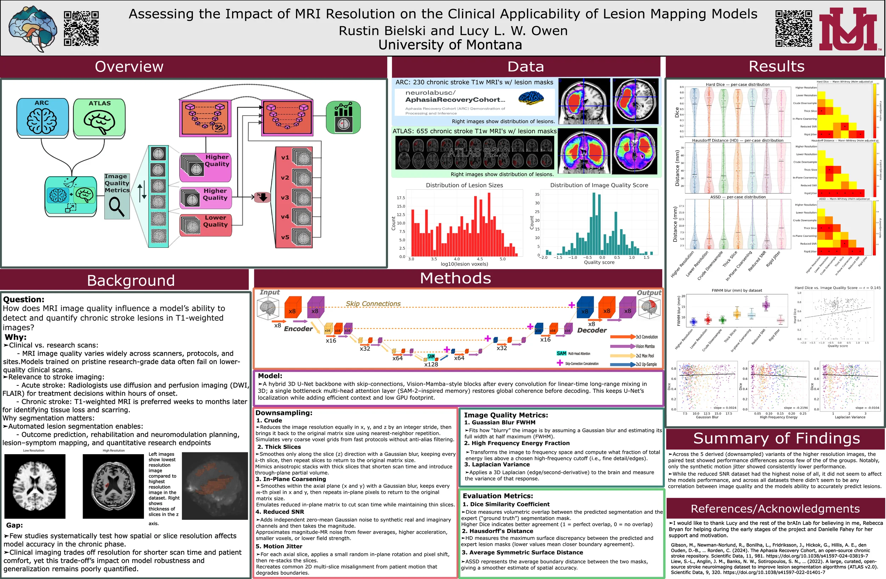
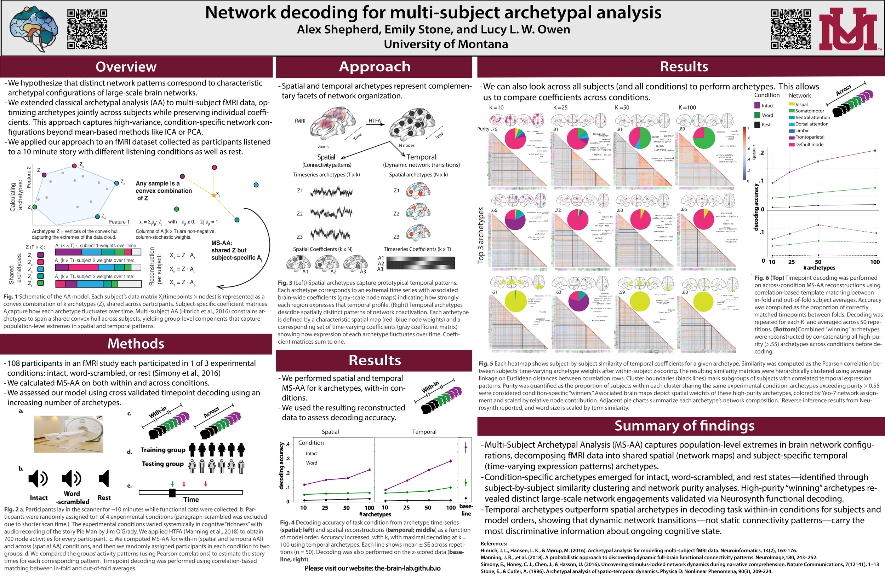
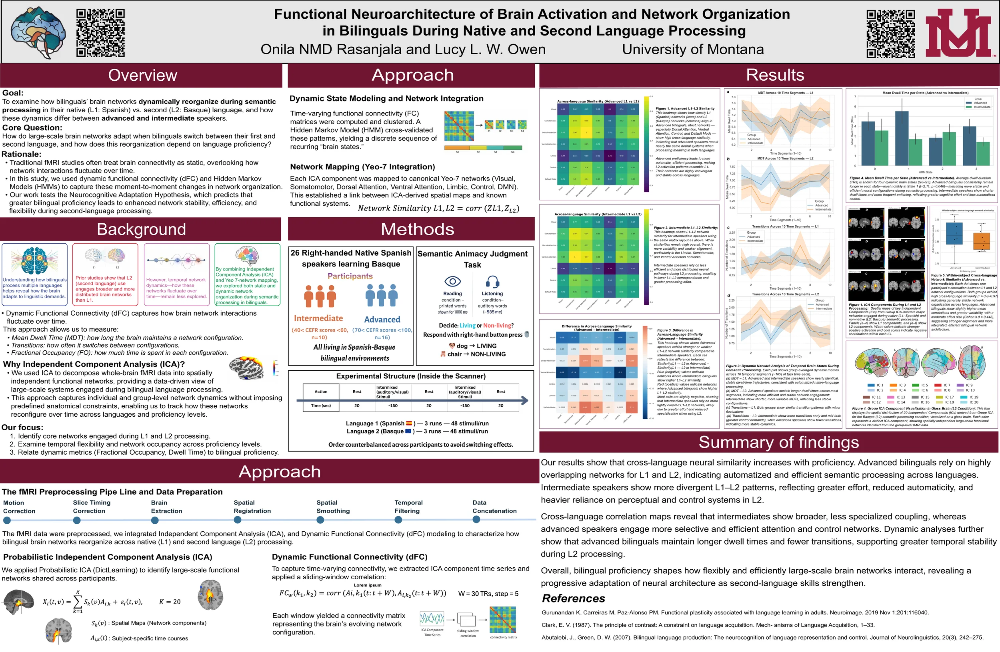
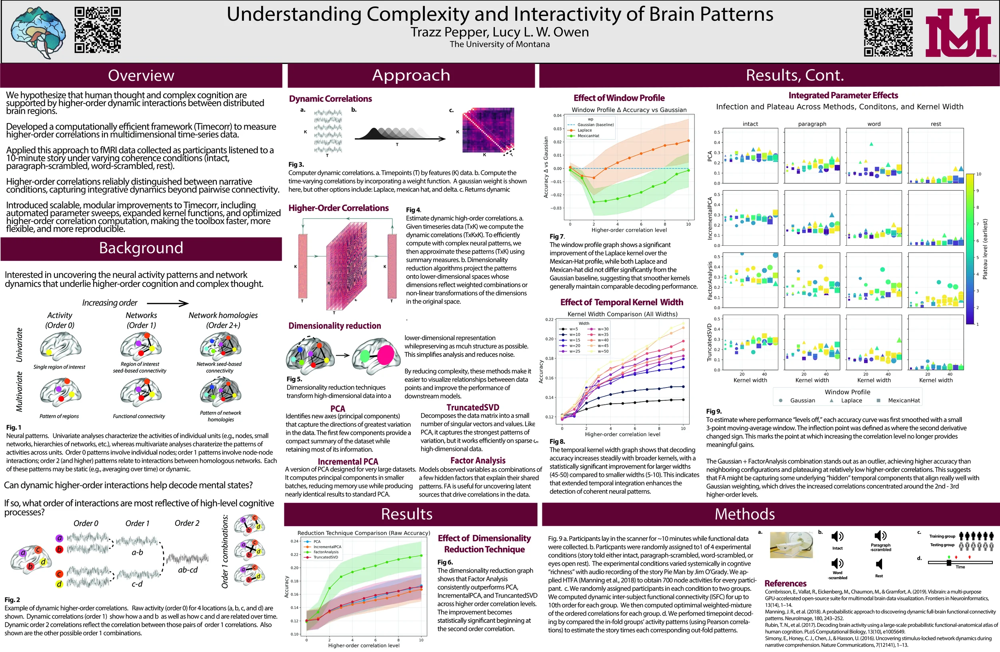
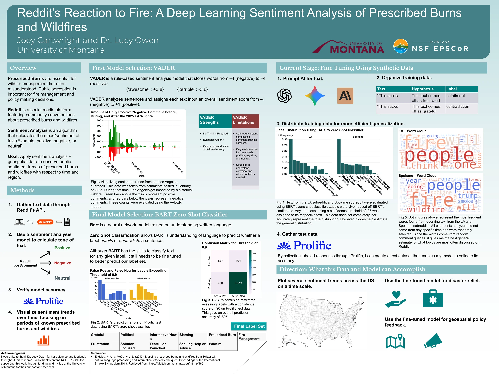

brAIn_lab
Neuroscience Research
and Machine Learning
Lab
University of Montana

Research Papers
Research Posters

Download PDFPoster Presentation | Rustin Bielski
Observing the impact of MRI resolution on the accuracy of detecting chronic stroke lesions.

Download PDFPoster Presentation | Alex Shepherd
Network decoding using archetypcal analysis.

Download PDFPoster Presentation | Onila NMD Rasanjala
Observing brain activation patterns during first language and second language processing.

Download PDFPoster Presentation | Trazz Pepper
Observing higher order correlations using the pieman dataset.

Download PDFPoster Presentation | Joey Cartwright
Using sentiment analysis to examine social media reactions to prescribed burns and wildfires.